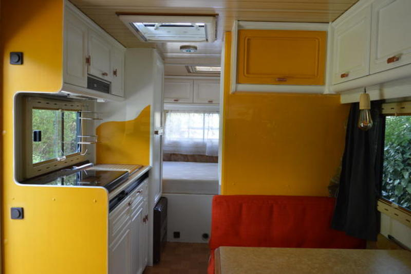
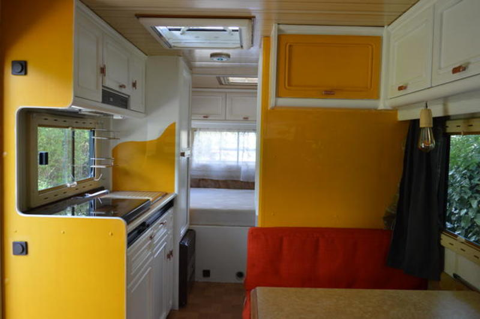

Rénovation d'un camping car, et c'est parti pour le voyage en famille
Temps de lecture: 2 minutes
Rénovation d’un camping car / photos & cie
En mai 2018 nous annoncions notre départ pour une période à durée indéterminée, en famille. Itinérance.
Les travaux sur le camping car avaient débuté en mars 2018. Très peu étaient au courant quand nous sommes partis.
Nous souhaitions vous partager ces quelques photos de comment nous avons transformé son intérieur. Nous avons acheté un vieux camping car Burstner de 1992. Rénover l’intérieur était un beau défi et une phase précieuse pour nous aider à nous projeter et préparer ensemble le départ. Tout comme apprendre la mécanique ensemble au fur et à mesure.

Ambiance un mois avant le départ
Le salon - la table
Poncé,une bonne sous-couche fixatrice, des peintures dont une bombe de peinture bronze pour les boutons, tissus rouge et couture, électricité pour passer de leds en 12v à l’ampoule à filament à 230v.


Sur le côté avec le coin cuisine


Sept mètres cinquante de longueur
 


Montage du lit en mezzanine pour notre petit fille Naomi
Naomi était agée d’1 an au moment du départ. Le tutoriel de montage du lit est présenté sur le blog de Caroline: lire son article le sommeil de l’enfant en itinérance
Astuces
Poncer & sous-couche fixatrice
> Peindre nous a pris moins de temps que … poncer. Nous avons poncé au moins 3 fois chaque surface de bois vernis. Puis lorsque toute trace du vernis avait disparu nous avons pris soin d’y mettre une sous-couche fixatrice. Puis c’était enfin le temps de la peindre.
10 jours de travaux pour l’intérieur
Des journées complètes uniquement pour l’intérieur, hors réflexion du choix des matériaux. Comprendre la mécanique nous aura pris du temps même si nous avons appris la plupart au fur et à mesure du voyage.
Particularité
Le camping car est pensé pour être une merveille pour enfant. Naomi était âgée d’un an au début des travaux - c’est à dire 3 mois avant le départ - et le camping car a aussi été aménagé pour elle, de manière à faciliter les apprentissages autonomes, la motricité, les jeux, la collaboration.
Pour en savoir plus je vous invite à explorer les articles de Caroline:“Moose, une maison à quatre roues” Récits d’expériences nomades avec un jeune enfant.
Amitiés,
Thomas